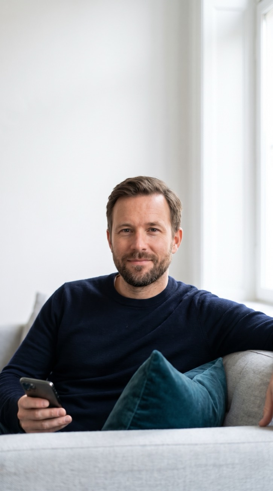
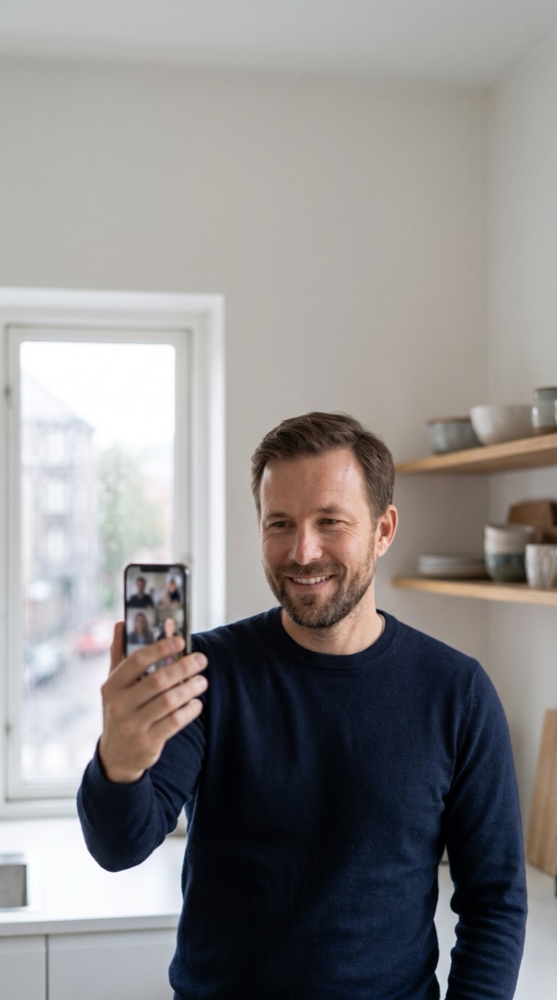

Passport and visa
Check your passport is valid for at least 6 months. If you need a visa, your coordinator sends an invitation letter from the hospital.
From your first message to your last check-up at home. Here is what happens at each step, who does what, and what you decide along the way.

Nothing is booked until you have your surgeon's written plan and have spoken to them. You can stop at any step.
Send your glasses prescription or any eye reports, through the form or on WhatsApp. A coordinator replies in your language.
An eye surgeon at our partner hospital reviews your records. You get a written plan, then a video call with that surgeon.
A full eye exam first. Your surgeon confirms the plan before anything is done. Then treatment and a check-up before you fly.
We stay in touch after you fly home. Checks are planned by video and at an optometrist near you where available.
The fastest start is a clear photo of your latest glasses prescription. If you have eye reports or scans, send those too. If you have nothing on paper, tell us what you notice: a coordinator asks the right questions.
Your details go only to your coordinator and the surgeon who reviews them, under a written consent that covers sharing them with the partner hospital in Turkey.
An eye surgeon at our partner hospital looks at your records and writes back with the treatment that is likely to suit you, the alternatives, and the price per eye and for both eyes. You also see how many nights you would stay.
Then you meet that surgeon on a video call, at least 7 days before you fly, as the UK Royal College of Ophthalmologists recommends. Bring every question. If you want to go ahead, a deposit holds your dates.
Deposit and refund termsYou are met at the airport and driven to your hotel. At the hospital you have a full eye exam with scans. Your surgeon confirms the plan, or changes it, before anything is done, and you sign consent in English.
After treatment you rest at the hotel. Before you fly, your surgeon checks your eyes and confirms you are fit to travel. Your coordinator is with you at every appointment, and an interpreter is arranged if you need one.
Your days in Istanbul, hour by hourMost problems after eye surgery are easy to treat when someone is checking. So your checks are planned before you leave: a video call in the first week, then checks at 1, 3 and 12 months, by video or at an optometrist near you where available.
You take home your surgery report and lens details in English for your own optician or GP. If you ever need further treatment, a written policy says who treats you and who pays.
How aftercare works
Licensed facilitator (AK-0706), part of Veon Health. We are not a clinic and do not give medical advice.
Your surgeon is responsible for your medical care, consent and follow-up.
It is part of the package price. You pay nothing extra to us.
Who treats you, who pays, and how travel is arranged. Read it before you book.
The usual stay. Your written plan gives your exact days, because your surgeon decides when you are fit to fly.
| Treatment | Usually for | Nights in Istanbul | Price from |
|---|---|---|---|
| SMILE Pro | Short-sight and astigmatism | 2–3 | £975 per eye£1,950 both eyes |
| Femto-LASIK | Short-sight, long-sight, astigmatism | 3 | £750 per eye£1,500 both eyes |
| Trans-PRK | Thinner corneas, contact sports | 4–5 | £825 per eye£1,650 both eyes |
| EVO ICL | High prescriptions | 4–5 | £1,475 per eye£2,950 both eyes |
| Lens replacement | Over 45, reading and distance glasses | 4–6 | £1,450 per eye£2,900 both eyes |
| Cataract surgery | Cloudy lens, premium lens options | 4–6 | £1,600 per eye£3,200 both eyes |
| Keratoconus (CXL) | Slowing keratoconus | 5–7 | £1,400 per eye |
Your coordinator sends you a dated version of this list once your plan is confirmed.
Check your passport is valid for at least 6 months. If you need a visa, your coordinator sends an invitation letter from the hospital.
Lenses change the shape of your cornea. Soft lenses usually come out about a week before your exam, rigid lenses longer. You get exact dates.
Bring a list of everything you take, including eye drops. Tell your surgeon on the video call about any condition you are treated for.
Choose a policy that covers travel for medical treatment. Standard holiday insurance often does not. Your coordinator can explain what to look for.
Most patients bring a companion. They can share your room and come to every appointment. You should not travel alone straight after lens surgery.
Plan your nights in Istanbul plus a few quiet days at home. Desk work usually returns within days after laser, a little later after lens surgery.
No. Sending your prescription gets you a surgeon's written plan and a price. You decide afterwards, and you can stop at any step. A deposit is only taken once you choose to book dates.
An eye surgeon at our partner hospital in Istanbul. We are the facilitator: we organise your trip and coordinate your care, but we do not give medical advice.
Yes. You have a video call with the surgeon who will treat you, at least 7 days before you fly, so you have time to think it over.
Your surgeon explains why and offers an alternative if one suits your eyes. If none does, your deposit is refunded in full. You pay only for the exam and your hotel.
Yes, most patients bring someone. A companion can share your room and sit with you at every appointment.
Your surgeon's team, by video, and an optometrist near you where we have a partner. Your checks are planned before you leave Istanbul, and you get your records in English.
A deposit holds your dates. The rest is paid in Istanbul after your exam confirms the plan, by card or bank transfer.

Send your prescription. An eye surgeon replies with your options and a fixed price.